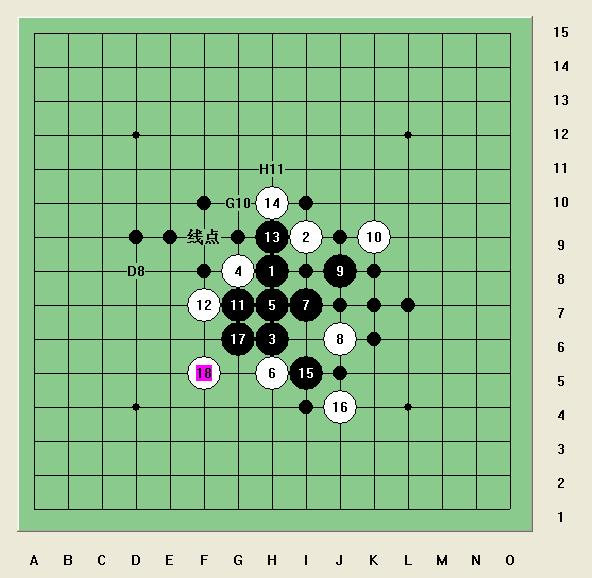

[学术讨论]饺子防守颠峰力作 跳出三界一锤定音
#1 [学术讨论]饺子防守颠峰力作 跳出三界一锤定音 作者：岳麓小棋后 发表时间：2009-4-10 13:27:05
=======上图对应的爱五子棋谱代码如下，以便你拆解：========
h8i9h6g8h7h5i7j6j8k9g7f7h9h10i5j4g6f5
======================================================
饺子包的这么好！！！！看看下面这个更神的19手
=======上图对应的爱五子棋谱代码如下，以便你拆解：========
h8i9h6g8h7h5i7j6j8k9g7f7h9h10i5j4g6f5f9
======================================================
［ 茗弈小刀 于 2009-4-10 15:05:37 时奖励此帖[金币加 20 威望加1］

这里的黑19手是个很隐蔽的联系全盘的活线点，通过D8点联系D8E9F10，I5H6G7F8E9，I7H8G9F10E11，H9G9F9E9D9这4条线，通过G10从内部联系G7H7I7发散出去的那条线，通过H11联系右侧黑子，地毯总结的原理就是表现为多分支必胜。
［此帖子已被 茗弈小刀 在 2009-4-22 19:10:34 编辑过］
#2 Re:饺子防守颠峰力作 跳出三界一锤定音 作者：茗弈梓轩 发表时间：2009-4-10 13:43:09
果然很妙的19，强悍！学习了！
#3 Re:饺子防守颠峰力作 跳出三界一锤定音 作者：就是爱玩 发表时间：2009-4-10 14:56:10
体会中。。。
小棋后，能具体告诉我这个黑19手作用有哪些吗？
#4 Re:饺子防守颠峰力作 跳出三界一锤定音 作者：菜包先生 发表时间：2009-4-10 15:02:19
 小棋后太有才了！
小棋后太有才了！
#5 Re:饺子防守颠峰力作 跳出三界一锤定音 作者：茗弈小刀 发表时间：2009-4-10 15:06:35
是很妙！
#6 Re:饺子防守颠峰力作 跳出三界一锤定音 作者：无尽 发表时间：2009-4-10 15:12:29
19手的确不错，但也有不算复杂的VCT。
=======上图对应的爱五子棋谱代码如下，以便你拆解：========
h8i9h6g8h7h5i7j6j8k9g7f7h9h10i5j4g6f5f6e6g5f4i4i6h4i3c5
======================================================
=======上图对应的爱五子棋谱代码如下，以便你拆解：========
h8i9h6g8h7h5i7j6j8k9g7f7h9h10i5j4g6f5f6e6g5f4i4i6h4e7j7k7k6i8h3j5g3g4i3
======================================================
#7 Re:饺子防守颠峰力作 跳出三界一锤定音 作者：就是爱玩 发表时间：2009-4-10 15:13:26
都说妙，可是没有一个人告诉我怎么个妙法。
看来只有等小棋后本人上线来给我解答了。
我跟棋后小姐姐神交已久，相信她会给我指点哦。
#8 Re:饺子防守颠峰力作 跳出三界一锤定音 作者：无尽 发表时间：2009-4-10 15:19:51
LS 注意19手以后以下几个点：D8,H11,G10…… 与 冲四活三点（包括即将形成的） 的连接
19手以后至少在左右两边各作出了一套线路没有重叠的VCT，就是妙在这里
白也没有反，因此无法防守
从眠二作出VCT必胜来看好像不多见，如果在下出19手之前看清了就比较不错了
P.S 更正一下，两套VCT有一个小小的交集，就是6线与I线，但如果白先占I6也没用……
#9 Re:饺子防守颠峰力作 跳出三界一锤定音 作者：就是爱玩 发表时间：2009-4-10 15:24:38
正在体会楼上指点的路线
谢谢，鲜花奉上。
#10 Re:饺子防守颠峰力作 跳出三界一锤定音 作者：小枫叶 发表时间：2009-4-10 18:29:13
很强呀，学习中。。。。。。